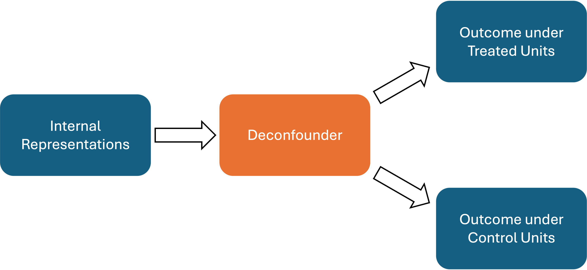
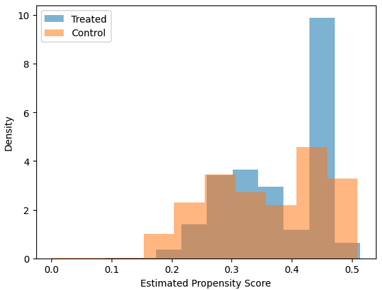

Text-As-Treatment
Text-As-Treatment is a key setting where gpi_pack is especially useful. Instead of directly modeling texts, we use the internal representations of LLMs to estimate treatment effects. This approach improves accuracy and computational efficiency. In this section, we provide an overview of the Text-As-Treatment setting and demonstrate how to use gpi_pack to estimate treatment effects with the internal representations of LLMs.
Note
This part is based on our paper Causal Inference with Generative Artificial Intelligence: Application to Texts as Treatments. Please refer to the paper for the technical details.
What is Text-As-Treatment?
Text-As-Treatment refers to scenarios where participants receive various texts, and the goal is to determine how one specific feature of the texts (e.g., topics or sentiments) influences downstream outcomes. A primary challenge in this setting is that texts inherently contain other features that might confound the relationship between the feature of interest and the outcome.
To address this challenge, our paper proposes using LLMs’ internal representations to bypass the direct modeling of texts. We introduce a representation learning method called the deconfounder, which enables us to estimate the treatment effects of the feature of interest without directly observing all confounding features. The current TarNet implementation learns this shared representation, appends a user-supplied treatment value, and uses one treatment-conditioned outcome network. Potential outcomes under control and treatment are obtained by evaluating that network with treatment values zero and one. The following figure illustrates the conceptual architecture:
{kind=link}

Once the deconfounder and the treatment-conditioned outcome model are estimated, a propensity score model is built based on the deconfounder. Finally, the estimated nuisance functions are combined with a doubly robust score to estimate the treatment effect.
How to estimate treatment effects
gpi_pack offers the wrapper function estimate_k_ate to streamline the estimation of treatment effects using LLMs’ internal representations. This function handles all the necessary steps, including deconfounder estimation and propensity score estimation, so you only need to provide the data.
Suppose you have a DataFrame df containing the treatment variable, outcome variable, and texts, and you have already extracted the internal representations of the LLMs as tensor-only .pt files. Below is an example demonstrating how to use estimate_k_ate.
# loading required packages
import pandas as pd
# create a data frame
df = pd.DataFrame({
'TreatmentVar': [1, 0, 1, 0, 1],
'OutcomeVar': [1, 0, 1, 0, 1],
'Text': [
'Create a biography of an American politician named Nathaniel C. Gilchrist',
'Create a biography of an American politician named John Doe',
'Create a biography of an American politician named Jane Smith',
'Create a biography of an American politician named Mary Johnson',
'Create a biography of an American politician named Robert Brown',
]
})
This five-row data frame illustrates the required organization only. Neural-network fitting and causal estimation require a substantively adequate sample.
Step 1: Load the Internal Representations
First, load the internal representations using the load_hiddens function:
# loading required packages
from gpi_pack import estimate_k_ate, load_hiddens
# load hidden states stored as .pt files
hidden_dir = "outputs/hidden" # directory containing the .pt files
hidden_states = load_hiddens(
directory = hidden_dir,
hidden_list= df.index.tolist(), # list of indices for hidden states
prefix = "hidden_last_", # prefix of hidden states (e.g., "hidden_last_" for "hidden_last_1.pt")
)
Note
If you have not extracted the internal representations, please refer to Generating Texts with Llama 3.
Step 2: Estimate the Treatment Effects
Once the internal representations are loaded, use estimate_k_ate to estimate the treatment effects:
# estimate treatment effects
ate, se = estimate_k_ate(
# Data (Inputs)
R= hidden_states,
Y= df['OutcomeVar'].values,
T= df['TreatmentVar'].values,
# Hyperparameters (optional)
K=2, #K-fold cross-fitting
lr = 2e-5, #learning rate
architecture_y = [200, 1], #outcome model architecture
architecture_z = [2048], #deconfounder architecture
)
To compute a 95% confidence interval for the treatment effect estimate, use the following code:
# calculate 95% confidence interval
lower_bound = ate - 1.96 * se
upper_bound = ate + 1.96 * se
print(f"ATE: {ate}, SE: {se}, 95% CI: ({lower_bound}, {upper_bound})")
How to control confounders
In some cases, you may want to control for confounders that are not included in the texts. gpi_pack supports this via the estimate_k_ate function in two ways:
Method 1: Using a Formula with a DataFrame
If your DataFrame includes confounders as columns, specify formula_C (for example, "conf1 + conf2") along with the DataFrame. The argument name uses an uppercase C.
# Method 1: supply covariates with a formula and DataFrame
ate, se = estimate_k_ate(
R= hidden_states,
Y= df['OutcomeVar'].values,
T= df['TreatmentVar'].values,
formula_C="conf1 + conf2",
data=df,
K=2, #K-fold cross-fitting
lr = 2e-5, #learning rate
# Outcome-network widths; the final width is the outcome dimension
architecture_y = [200, 1],
# Shared-representation widths; the final width is the deconfounder dimension
architecture_z = [2048],
)
Method 2: Using a Design Matrix
Alternatively, create a design matrix of confounders and pass it to the C argument:
Note
The design matrix must have one row per observation. TarNet appends these covariates to the learned deconfounder; it does not concatenate them to the raw input representation.
# Method 2: supply covariates using a design matrix
import numpy as np #load numpy module
C_mat = np.column_stack([df['conf1'].values, df['conf2'].values])
ate, se = estimate_k_ate(
R= hidden_states,
Y= df['OutcomeVar'].values,
T= df['TreatmentVar'].values,
C=C_mat, #design matrix of confounding variable
K=2, #K-fold cross-fitting
lr = 2e-5, #learning rate
# Outcome-network widths
architecture_y = [200, 1],
# Shared-representation widths
architecture_z = [2048],
)
Visualizing Propensity Scores
For the Text-As-Treatment setting, it is crucial to assume that the textual feature and the confounding features are disentangled—a property known as separability. Visualizing the propensity scores can help diagnose whether this assumption holds. If the propensity scores are extreme (close to 0 or 1), it may indicate that confounding features are entangled with the treatment feature of interest.
By default, estimate_k_ate displays a Matplotlib histogram of the
cross-fitted propensity scores for each outer fold. Set
plot_propensity=False to suppress those histograms. In version 0.2.1, the
wrapper still calls TarNet.fit with its default plot_loss=True and
does not expose that argument, so it also displays one training/validation
loss figure per outer fold. Use the lower-level workflow when those loss
figures must be disabled. Below is an example that explicitly enables the
propensity plot:
# estimate treatment effects
ate, se = estimate_k_ate(
R= hidden_states,
Y= df['OutcomeVar'].values,
T= df['TreatmentVar'].values,
K=2, #K-fold cross-fitting
lr = 2e-5, #learning rate
architecture_y = [200, 1], #outcome model architecture
architecture_z = [2048], #deconfounder architecture
plot_propensity = True, #visualize propensity scores
)
{kind=link}

Hyperparameters
The estimate_k_ate function accepts the following parameters:
R: list or np.ndarrayHidden representations with shape
[N, d_R]. Image-shaped[N, C, H, W]inputs are also accepted whenconv_layersis supplied.
Y: list or np.ndarrayA list or NumPy array of outcomes, shape: (N,).
T: list or np.ndarrayA list or NumPy array of treatments, shape: (N,). Typically binary (0 or 1).
C: list or np.ndarray, optionalAdditional confounders with shape
[N, d_C]. They are appended to the learned representation and consequently enter both the outcome and propensity models.
formula_C: str, optionalA Patsy-style formula such as
"conf1 + conf2"used to constructCfromdata. The implementation removes the intercept.
data: pandas.DataFrame, optionalThe DataFrame containing the columns used in
formula_C.
K: int, default=2Number of cross-fitting folds (K-fold split).
valid_perc: float, default=0.2Proportion of the training set to use for validation when fitting TarNet in each fold.
plot_propensity: bool, default=TrueWhether to display a Matplotlib histogram of the estimated propensity scores. This does not control the per-fold TarNet loss figures in version 0.2.1.
ps_model: class, optionalPropensity-model class implementing
fitandpredict_proba. The default is SpectralNormClassifier.
ps_model_params: dict, optionalConstructor arguments for
ps_model. For the default classifier,input_dimis inferred from the returned representation when it is omitted.
batch_size: int, default=32Batch size for TarNet training.
nepoch: int, default=200Number of epochs to train TarNet.
step_size: int, optionalPatience of the
ReduceLROnPlateaulearning-rate scheduler.Nonedisables the scheduler.
lr: float, default=2e-5Learning rate for TarNet.
cluster: list, optionalCluster identifiers for clustered standard errors. Version 0.2.1 can misalign these identifiers with reordered cross-fitted scores; see the warning in estimate_k_ate before using it.
dropout: float, default=0.2Dropout rate for TarNet layers.
architecture_y: list, default=[200, 1]Additional widths of the treatment-conditioned outcome network. The final value is the outcome dimension and is normally 1. Internally, the implementation prepends an outcome layer whose width is
architecture_z[-1].
architecture_z: list, default=[2048]Widths of the shared representation network. The final value is the learned deconfounder dimension before optional
Cis appended.
conv_layers: list of dict, optionalFixed
Conv2dfront-end used for image-shapedR. See Image-As-Treatment.
conv_activation: callable, optionalActivation factory for the convolutional blocks. The default is
torch.nn.ReLU; useNoneto omit convolutional activations.
trim: list or None, default=[0.01, 0.99]Clipping bounds for the propensity score. Scores outside this range are replaced with the nearest bound. Use
Noneto disable clipping.
bn: bool, default=FalseWhether to apply batch normalization in TarNet.
patience: int, default=5Patience for early stopping in TarNet training (number of epochs without improvement).
min_delta: float, default=0Minimum improvement threshold for early stopping.
model_dir: str, optionalDirectory in which each TarNet fit saves its best state as
best_TarNet.pth. The best state is also restored in memory before prediction.
verbose: bool, default=TrueWhether TarNet prints its device and epoch progress. The propensity classifier, held-out accuracy, and final ATE/SE are still printed when this is
False.
For the complete signature and return values, see estimate_k_ate.